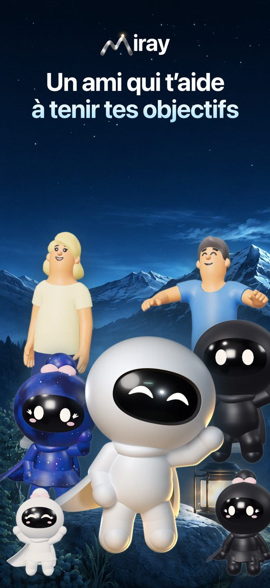
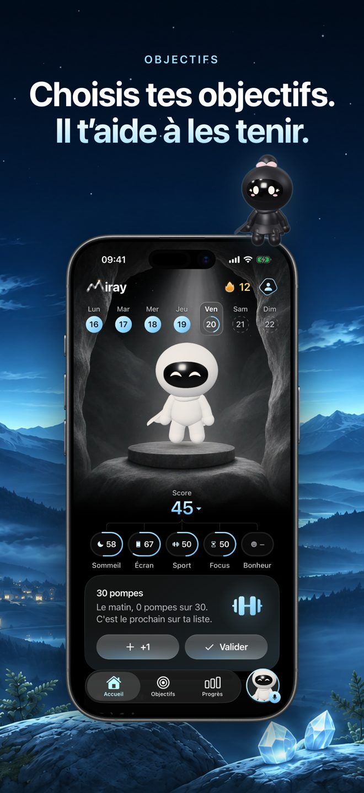
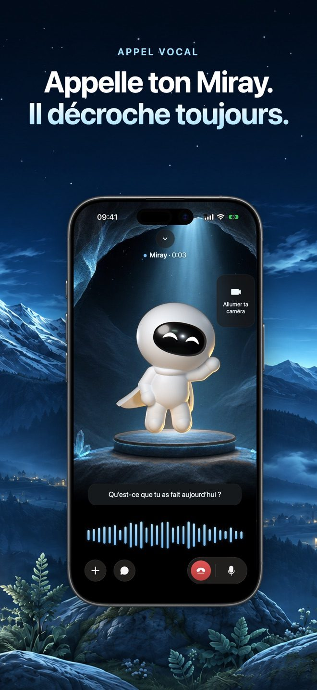
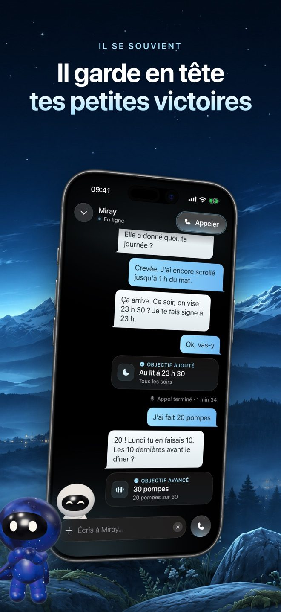
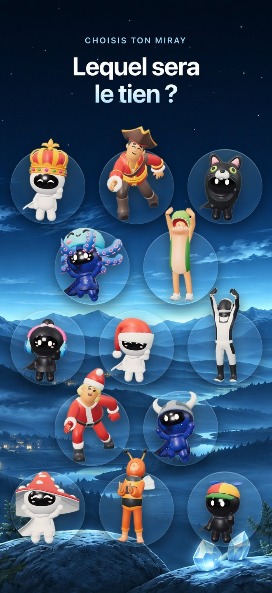
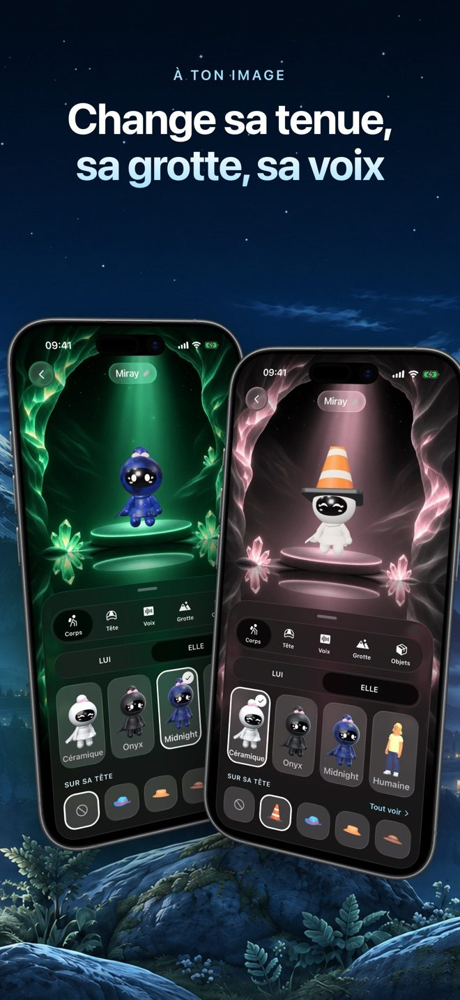
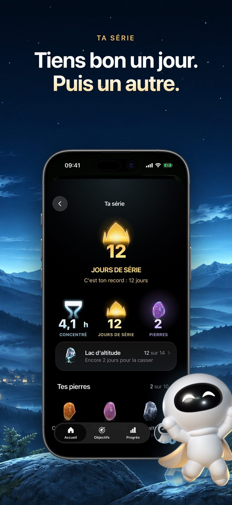
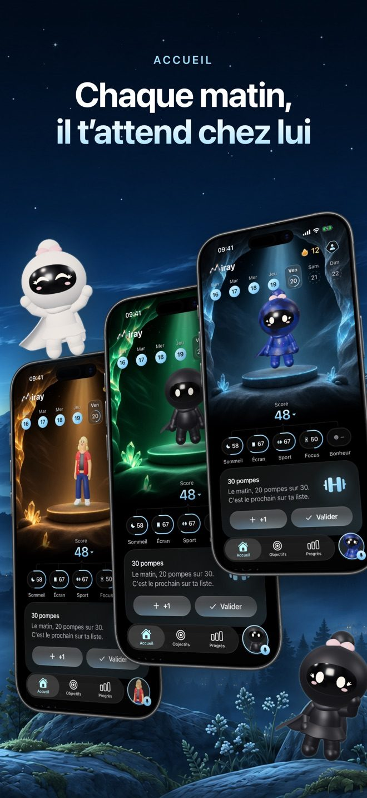
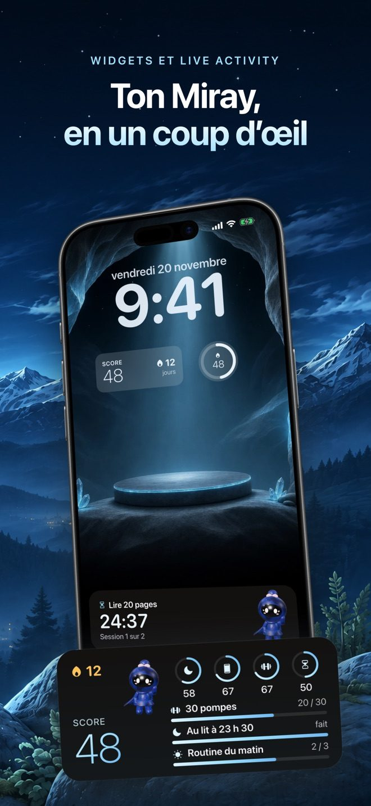
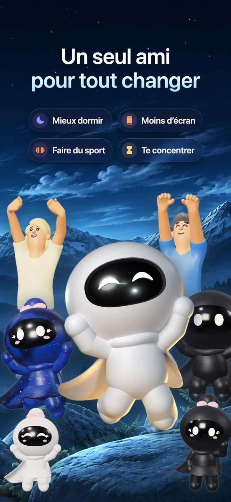

Statut
Bêta
Accès anticipé
Catégorie
Santé et forme
Langue
FR
Français
Appareil
iPhone
TestFlight










iPhone
Comment l'essayer
- 1Installe l'app gratuite TestFlight d'Apple sur ton iPhone.
- 2Reviens ici et touche Obtenir, puis Accepter et Installer dans TestFlight.
- 3Ouvre Miray et dis-nous ce que tu en penses : dans TestFlight, touche Envoyer un commentaire, ou fais une capture d'écran.
Description
Tu sais ce que tu devrais faire. Dormir plus tôt, aller à la salle, avancer sur ton projet, poser ton téléphone. Le problème, ce n'est pas de savoir. C'est de tenir.
Voici Miray, ton ami du quotidien. Tu lui dis une fois ce que tu veux changer, et il est là chaque jour pour t'aider à le tenir.
TU PEUX LUI PARLER DE TOUT
· Tes objectifs : sommeil, sport, travail, temps d'écran
· Tes journées : ce qui a marché, ce qui a coincé
· Tes doutes : la motivation qui retombe, les soirs où tout lâche
Écris-lui ou appelle-le à voix haute. Il se souvient de ce que tu lui confies.
TU TE RECONNAIS ?
· Tu t'étais promis de te coucher tôt, et il est encore 1 h
· Tu commences le sport à fond, puis tu ralentis
· Tu ouvres TikTok « deux minutes » et la soirée y passe
· Tu as des objectifs, mais personne pour te tenir
CE QUE TON MIRAY FAIT POUR TOI
· Des petits défis chaque jour, à ton rythme
· Il t'envoie un petit mot à l'heure que tu choisis
· Le soir, il fait le bilan avec toi : ce que tu as tenu, ce qu'on change demain
· Il te rappelle ta parole, sans te juger : « Tu m'as dit 23 h. Il est 23 h 40. »
DES PETITS DÉFIS, DE GRANDS CHANGEMENTS
Jours tenus, score du jour, progrès de la semaine. Une journée ratée n'efface rien : on reprend dès le lendemain.
CHOISIS TON MIRAY
Céramique, Onyx ou Midnight, en garçon ou en fille. Sa grotte, sa voix, son caractère : il est à toi.
Informations
- Version
- 1.0 (bêta)
- Catégorie
- Santé et forme
- Compatibilité
- iPhone
- Langue
- Français
- Prix
- Gratuit pendant la bêta